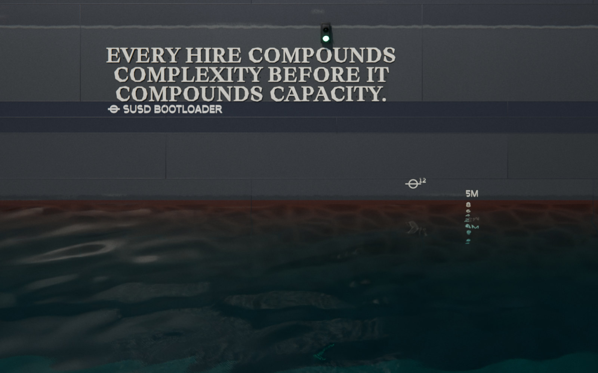

Scaling Up‑Side‑Down
The book
SUSD Bootloader
Get it free
In an open system, AI accelerates chaos.
In a closed system, AI accelerates clarity.
SUSD Bootloader
A free file for your AI
Version 16
35,445 words for your AI to read, so you don't have to
Works with Claude, ChatGPT and Gemini
What you get back Where your team stands, which physics apply, and which advice fits.
Upload the file and use the starting prompt provided with it.
Then let the system locate you.
Read the AppendixScaling Up‑Side‑Down The book by Michael Wentz. Pre-orders open soon.